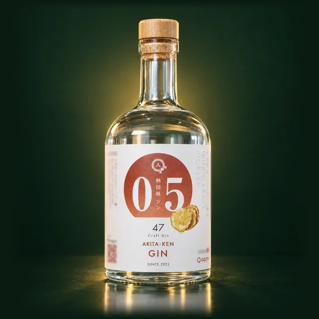

銘柄スペック
| 銘柄名 | 秋田県ジン by agataJapan |
| アルコール度数 | 40% 国産ジンの度数の中央値は45% › |
| カロリーの目安 | 30mlで約67kcal（度数からの計算値） ジンのカロリー・糖質 › |
| 容量 | 500ml |
| 参考価格 | ¥6,600（税込・本人プレスリリース） |
※ 2026年7月発表の新商品（CAMPFIREで先行販売）。製造は早苗饗蒸留所、企画・販売はスターマーク株式会社（県ジンプロジェクト第22弾）
秋田県ジン by agataJapan を購入できるサイト
下記ボタンから楽天市場の取扱ページに移動します。価格・在庫は移動先でご確認ください。
PR ／ アフィリエイトリンクを含みます。
早苗饗蒸留所はふるさと納税の返礼品を出しています
早苗饗蒸留所（秋田県男鹿市）は、「SANABURI Prototype_02」をふるさと納税の返礼品として出しています。このページの秋田県ジン by agataJapanが対象に含まれるかは、各ポータルの返礼品ページでご確認ください。
PR ／ アフィリエイトリンクを含みます。寄附額・在庫は各ポータルでご確認ください。
ボタニカル
いぶりがっこの漬け汁、稲とアガベの酒粕、ジュニパーベリー（全リストは公式に記載なし）
いぶりがっこの漬け汁稲とアガベの酒粕ジュニパーベリー
全リストは公式に記載なし。
※ ボタニカル情報は早苗饗蒸留所公式サイトの記載に準拠。蒸溜時期・ロットにより若干異なる場合があります。
蒸溜所情報
| 運営 | 株式会社SANABURI（早苗饗蒸留所） |
| 所在地 | 秋田県男鹿市 |
| 公式サイト | https://sanaburi.co.jp/ |
同じ蒸溜所の他銘柄
東北の他の銘柄
画像はイメージです
クラフトジン ナイトトラベラー
山本酒造店｜秋田県 / 45% / 700ml
参考 ¥4,400前後（税込・正規流通）
画像はイメージです
秋田杉GIN
秋田県醗酵工業｜秋田県 / 46% / 500ml
参考 ¥3,149（税抜・参考小売価格・公式）
画像はイメージです
クラフトジン 欅（KEYAKI）
Miyagi Craft Gin｜宮城県 / 42% / 700ml
参考 市場実勢 約¥4,389（税込）
画像はイメージです
naturadistill 固有種蒸溜酒
naturadistill｜福島県 / 47% / 500ml
参考 ¥4,980（税込・公式）
画像はイメージです
ニッカ カフェジン
ニッカ宮城峡蒸溜所｜宮城県 / 47% / 700ml
参考 ¥4,500（税別・参考小売価格・公式）
画像はイメージです
清庵 -SEIAN-
世嬉の一酒造｜岩手県 / 40% / 330ml
参考 ¥2,310（税込・公式EC）
あわせて読む
本ページについて：
本銘柄の情報は早苗饗蒸留所公式サイトを一次ソースとして掲載しています。価格・在庫・ボタニカル等は予告なく変更される場合があります。実勢価格・最新在庫は楽天市場・Amazon等のリンク先でご確認ください。20歳未満の飲酒は法律で禁止されています。
早苗饗蒸留所の方へ：掲載内容の修正・新商品のお知らせ・取材のご希望は蒸溜所・販売店の方へから。
早苗饗蒸留所の方へ：掲載内容の修正・新商品のお知らせ・取材のご希望は蒸溜所・販売店の方へから。